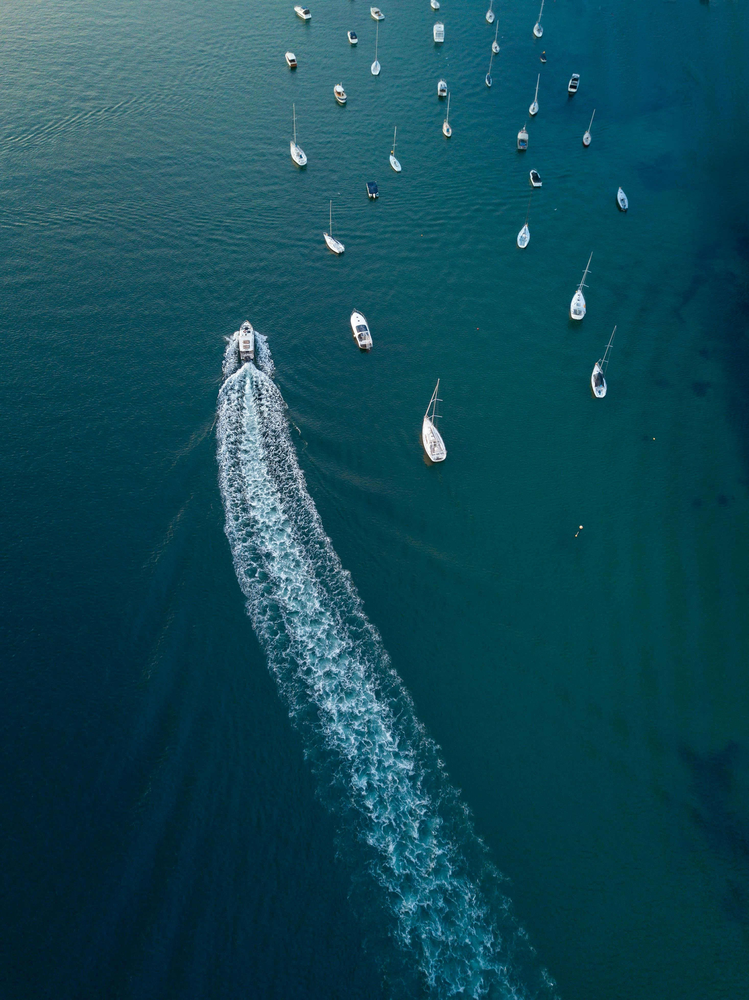

INICIO


|
DEFINICION
La historia de Mundo Marino comenzó con Don David Méndez, un emprendedor argentino nacido en 1910 en Entre Ríos.
Enamorado de San Clemente del Tuyú, construyó inicialmente un camping con una piscina olímpica en una zona desvalorizada y de difícil acceso.
Con el tiempo, él y sus hijos observaron la frecuente presencia de animales marinos heridos, enfermos o desnutridos en la zona.
Este descubrimiento inspiró a Don David a transformar el lugar en un centro de rescate y conservación de fauna marina. Hoy en día,
Mundo Marino es un destacado parque temático que no solo ofrece entretenimiento educativo con espectáculos de delfines y leones marinos,
sino que también se dedica activamente al rescate, rehabilitación y educación sobre la conservación de especies marinas.
DESCUBRIMIENTO DE LA NESECIDAD DE RESCATE DE FAUNA MARINA
Con el tiempo, Don David y sus hijos notaron la presencia frecuente de animales marinos heridos, enfermos o desnutridos en la zona.
Este hallazgo fue crucial para dirigir el enfoque del lugar hacia el rescate y la rehabilitación de estos animales.
TRANSFORMACION EN CENTRO DE RESCATE Y PARQUE TEMATICO
Impulsados por la necesidad de ayudar a la fauna marina local, Mundo Marino evolucionó para convertirse en un centro de rescate y
conservación de animales marinos. Además de sus actividades de rescate, el parque ofrece espectáculos educativos con delfines y
leones marinos para concienciar sobre la conservación marina.
LEGADO Y IMPACTO
El legado de Mundo Marino en Argentina es notable por su dedicación al rescate y rehabilitación de animales marinos, incluyendo delfines,
lobos marinos y tortugas. Más allá de su labor de conservación, el parque fomenta la investigación científica y educa a los visitantes
sobre la importancia de proteger los océanos. Como destino turístico, Mundo Marino no solo ofrece espectáculos educativos, sino que también
promueve prácticas de turismo sostenible y inspira a la comunidad a valorar y conservar el medio ambiente marino, estableciendo así un legado
de concienciación ambiental duradero y significativo.
|

|